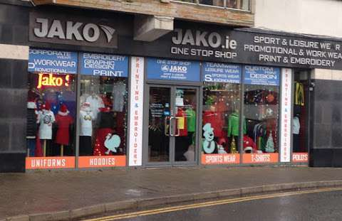

Club shop
jackets
The JAKO Team 2.0 all-weather jacket is made of 100% polyester. A highly functional, water-repellent outer material with PU coating keeps you dry in any weather. The integrated hood, extended back and elastic binding protect you from wind and rain. You can store your valuables in the integrated zipped side pockets. Details Water-repellent shell with PU-coating Cuff with elastic binding Side pockets with zip Mesh lining with opening for printing Extended back
Quarter zips
Recycled, modern and functional The graphic and dynamic jacquard elements in the shoulder insert of the Ziptop Performance and the contrast tape on the shoulder are typical of the Teamline Performance styles. The body with soft fleece inside is made of 100% recyclable polyester. The sleeve fits perfectly thanks to the highly elastic polyester/elastane mix and the practical thumb hole.
Shirts
T-shirt Performance - modern and functional The T-shirt from our Teamline Performance impresses with its graphic and dynamic elements in the jacquard sleeve. The sustainable JAKO T-shirt Performance is made of 100% recycled polyester. The polyester micro mesh makes the shirt particularly breathable and quick-drying. The collar is equipped with a ribbed insert.